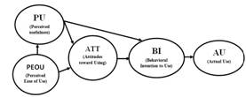
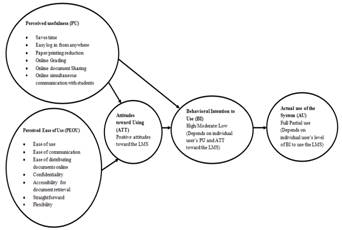
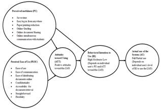

Factors Influencing Faculty Members’ Learning Management Systems Adoption Behavior: An Analysis Using The Technology Acceptance Model
Abstract
Faculty members underutilize the Learning Management System (LMS), a web-based based technology intended to facilitate student learning, despite the ubiquitous presence of the system at many universities. Drawing from Davis’s (1989) Technology Acceptance Model (TAM), this study identifies how faculty attitudes toward the LMS impact their adoption of this technology. The study focuses on a specific LMS, Blackboard. Thirty-six faculty members were invited to complete a web-based survey. Directive content analysis was utilized to analyze and interpret the survey responses. The study reveals that specific challenges including system problems and design flaws reduce the overall utilization of the LMS by faculty. Recommendations about how to increase the utilization of Blackboard among faculty members are included.
Author:
Nafsaniath Fathema
Auburn University
Auburn, Alabama, United States
Kyra Leigh Sutton
Georgia State University
Atlanta, Georgia, United States
Paper Transcript of Paper Titled :
Factors Influencing Faculty Members’ Learning Management Systems Adoption Behavior: An Analysis Using The Technology Acceptance Model
Factors Influencing Faculty Members’ Learning Management Systems Adoption Behavior: An Analysis Using The Technology Acceptance Model
Nafsaniath Fathema
Auburn University,
Auburn, Alabama, United States
Kyra Leigh Sutton
Georgia State University
Atlanta, Georgia, United States
Abstract- Faculty members underutilize the Learning Management System (LMS), a web-based based technology intended to facilitate student learning, despite the ubiquitous presence of the system at many universities. Drawing from Davis’s (1989) Technology Acceptance Model (TAM), this study identifies how faculty attitudes toward the LMS impact their adoption of this technology. The study focuses on a specific LMS, Blackboard. Thirty-six faculty members were invited to complete a web-based survey. Directive content analysis was utilized to analyze and interpret the survey responses. The study reveals that specific challenges including system problems and design flaws reduce the overall utilization of the LMS by faculty. Recommendations about how to increase the utilization of Blackboard among faculty members are included.
Keywords: Learning management system (LMS), technology acceptance model (TAM), blackboard, content analysis.
Introduction
Currently, tens to hundreds of thousands of dollars are invested on Learning Management Systems (LMSs) by educational institutions, in order to facilitate the teaching-learning activities (O’Leonard & Bersin, 2006). LMS is a self-contained webpage with embedded instructional tools that allow faculty to organize academic content and engage students in their learning (Laster, 2005). The utilization of this web-based technology enables instructors to create and deliver content, monitor student participation, and assess student performance. The LMS utilizes synchronous and asynchronous technologies to facilitate access to learning materials and administration (Black, Beck, Dawson, Jinks & Meredith, 2007). Provided that universities make a considerable investment in the LMS, it is important to ensure that end-users, especially faculty members, adopt the technology that is readily available.
Prior research indicates that LMSs are available across a number of universities and colleges; where upwards of 90% of all institutions have purchased rights to this technology (e.g., Hawkins & Rudy, 2007). Through the use of the LMS (e.g.,WebCT, Learn.com, KrawlerLMS, Joompla LMS, ATutor, Blackboard, and Canvas), higher education institutions offer multiple learning environments including: interactive learning, online learning, distance learning, or hybrid/ blended learning for their students (Falvo & Johnson, 2007, Vovides, Sanchez-Alonso, Mitropoulou, & Nickmans, 2007). Despite widespread availability, prior research suggests the LMS is a powerful technology that has yet to reach its full potential (Watson & Watson, 2007) across educational institutions.
Various issues are currently impeding the comprehensive utilization of the LMS. As an example, many instructors use the LMS simply as a delivery mechanism for the students (e.g., posting grades), and they do not use the integrated functionalities (Garrote, & Pettersson, 2007, Vovides et. al., 2007). Prior research has found the LMS features including discussion forums, chat, and email are underutilized by teachers and students (Nelson, 2003, Garrote & Pettersson, 2007). In addition, Weaver, Spratt and Nair (2008) found that faculty members perceive an increased workload associated with using the LMS. Specifically, their study revealed that 70% of faculty experience challenges with the software and received limited technical support when they attempted to include the LMS technology within their courses. Garrote and Pettersson (2007) noted that lack of motivation to spend the necessary time and effort to learn and participate in the LMS training, is among the more common restricting factor in the utilization of the LMS by the faculty members. Finally, most universities do not require faculty members to utilize the LMS, despite the considerable financial investment. Since it appears the availability of the LMS does not predict utilization of the system by faculty members, this paper seeks to discover the following: (a) gain a better understanding of the extent to which faculty members utilize the LMS for teaching, (b) identify faculty members attitudinal patterns toward the LMS and the factors that impact their attitudes, (c) identify the strengths and weaknesses of the LMS, and (d) summarize the recommendations faculty members made about how to increase the utilization of Blackboard. The specific LMS studied in this paper is, Blackboard.
The slow adoption of the LMS by faculty members is a critical concern since they are the key users. However, a recent literature review completed by the authors reveals that few studies focus on faculty attitudes toward the LMS (e.g. Liaw, Huang & Chen, 2007, Samarawichkrem & Stacey, 2007, Ball & Levy, 2008, Weaver et. al., 2008), whereas most studies focus on students’ attitudes. As a result, this study contributes to research by considering and analyzing faculty attitudes toward LMS.
In order to gain an understanding of the LMS utilization across faculty members, this article draws from Davis’(1989) Technology Acceptance Model (TAM) to identify how faculty attitudes toward LMS impacts their adoption, and subsequent utilization of the system. Based on the TAM framework, this study examines the nature of faculty attitudes under conditions of non-mandatory use of technology. A content analysis of open-ended data using the TAM framework was completed for this study. It does not appear that this methodology has been used in previous studies. In order to gain a better understanding of why faculty members utilize or choose not to utilize Blackboard, we explore several factors including the identification of the strengths and weaknesses of LMS (Blackboard) from the perspectives of faculty members. Also, data was gathered that allowed the authors to gain insight from faculty members regarding the initiatives that can be taken to ensure improved acceptance of Blackboard. Finally, a recent meta-analysis that incorporated the TAM model (Lee,Kozar & Larsen, 2003), reported that out of 101 studies only three utilized qualitative research methodology to analyze data. In summary, this paper makes three contributions: (a) it focuses on faculty utilization of LMS, in lieu of student utilization, (b) it investigates why faculty members do not utilize LMS despite the availability, and (c) it uses a qualitative methodology; where most previous studies on LMS have been quantitative in nature.
In the next section of the paper, we discuss the current literature related to LMS, and we describe the constructs included in the TAM model. We then describe how the study was conducted, including a description of the sample population. Next the key research findings are presented. The article closes with a set of recommendations regarding how to increase the utilization of a specific LMS: Blackboard, among faculty members.
Theoretical Framework
Learning Management Systems (LMS)
Previous LMS studies have mainly focused on three areas: (a) comparative analyses of LMS (i.e.Beatty & Ulasewicz, 2006, Carriere, Challborn & Moore, 2005, Black et.al, 2007), (b) issues related to the functions and features of LMS (i.e. Barron & Lyskawa 2001, Landon, 2007), or (c) the extraction of LMS evaluation criteria, (i.e. Kim & Leet, 2008, Samarawickrema & Stacey, 2007). For example, Weaver et. al., (2008) surveyed students and faculty about the LMS use, and found that system quality is important to both the students and faculty. Their study revealed that students pay attention to the design, resourcefulness, and good interaction capacity of LMS. In comparison, faculty members are more interested in the technical and administrative aspects of LMS. Gautreau (2011) cited the previous studies of Ayers and Doherty (2003), Jafari, McGee, and Carmean (2006), and Oliva and Pawlas (2005), and reported that:
“LMS may assist faculty with managing courses and organizing content to engage students and decrease planning time, thus supporting the instructional process. Despite the benefits of incorporating an LMS, many faculty members do not adopt technology as a teaching tool.” (p.2)
The current study leverages the TAM framework and identified the factors that impacted the faculty members’ attitudes toward using Blackboard.
Technology Acceptance Model (TAM)
Although there are other theories that can be used to explain technology adoption, the TAM model was included in this study for the following reasons. First, TAM is the most influential framework used to predict the technology adoption behavior of users (Davis, Bagozzi, & Warsaw, 1989, Venkatesh & Morris, 2000, Lee, et.al., 2003, Venkatesh & Bala, 2008). TAM has been applied to explain or predict individual behaviors across a broad range of end-user computing technology, and user groups (Davis, et al., 1989). TAM provides a quick and inexpensive way to gather general information about individuals’ attitudes toward a system, and it can be used to measure general levels of satisfaction of users with diverse interests (Mathieson, 1991). Finally, prior research has found TAM is empirically strong and powerful (Lee et.al, 2003), parsimonious (Davis et.al., 1989), and the model most often applied to study information technology adoption/utilization (Davis et al., 1989, Venkatesh & Morris, 2000, Venkatesh & Bala, 2008). In addition, TAM was useful in describing the user’s technological adoption behavior in different environmental settings.
TAM assumes that an individual’s technological acceptance behavior is determined by a number of factors. Two major factors are Perceived Ease of Use (PEOU) and Perceived Usefulness (PU). PEOU is defined as “the degree to which the prospective user expects the target system to be free of effort” (Davis et.al 1989, p. 985). The construct reflects the amount of effort that would be required relative to the person’s perceived capabilities. For example, the PEOU of Blackboard reflects the degree to which a faculty member believes that Blackboard is easy to use. PU is defined as the user’s “subjective probability that using a specific application system will increase his or her job performance within an organizational context” (Davis, et al., 1989, p.985). For example, PU is the degree to which a faculty member believes that using Blackboard would make his/ her academic work easier, and would facilitate his academics activities. As depicted in Figure 1, Davis found a causal influence of “perceived ease of use” of the technology on “perceived usefulness” of the technology.

Figure 1. Technology Acceptance Model (TAM) (Davis, 1989)
This inference suggests the faculty member’s perceptions of the technology will positively influence their attitude towards the technology. Also, according to TAM if users find a technology useful to them, they will develop positive attitudes toward the technology, which will shape their intentions to use the technology. Therefore, if faculty members find Blackboard useful to them (e.g., it helps them manage assignments given to students), they will develop positive attitudes toward it, which will shape their intentions to use it.
After the PEOU and PU constructs, the next construct that is present in the TAM model is Attitude Towards Using (ATT). The construct is defined as “an individual's positive or negative feeling about performing the target behavior (e.g., using a system)” (Davis et.al. 1989, p. 984). The construct ATT postulates that to the extent that faculty members perceive the technology is easy to use and helpful, they will have positive attitudes about the technology. Further, TAM postulates that the faculty members’ positive or negative attitudes toward using Blackboard are directly impacted by their perceptions of the usefulness (PU) and ease of use (PEOU) of Blackboard. In other words, to the extent that a faculty member perceives Blackboard easy to use and useful, he/she will have a positive attitude (ATT) towards using it. The fourth construct in the TAM model: Behavioral Intention (BI) is defined as the degree to which a person has formulated conscious plans to perform, or not perform some specified future behavior (Davis, 1989). In other words, this construct measures the end-user’s intention, which is directly influenced by ATT, that is, the attitude towards the technology. As it relates to Blackboard, BI states the conscious intentions of the faculty members to use or not the technology. It has been found in previous research that BI is the strongest predictor of actual use (AU) of the technology (Davis, et al., 1989). Specifically, BI has been found to be a valid predictor of AU, especially when the use of the technology is voluntary (Venkatesh, et. al., 2003).
Method
Participants
The participants in the study consisted of individuals with teaching responsibility, that is, faculty members and graduate teaching assistants at a large Southeastern university. Blackboard was adopted as the LMS by the university in Fall 2004; however it was not mandatory for all faculty members to utilize Blackboard. They had the flexibility to use none, some, or all of the available features within Blackboard. In addition, faculty members had the option to utilize other software over and beyond Blackboard. The setting in which the data was collected was ideal since faculty were not mandated to utilize Blackboard. The university had an information technology office which offered various Blackboard training sessions to the instructors, at no additional fee. However, it was not mandatory for the faculty members to attend the training.
A convenience sample of five colleges at the university was selected, and a total of 100 individuals with teaching responsibility (e.g., faculty, instructors, graduate students) were invited to participate in an electronic survey. The five colleges included: College of Education, College of Business, College of Engineering, College of Science and Mathematics, and College of Human Sciences. These colleges were selected as one or both of the co-authors knew individuals that had teaching responsibility during the semester data was collected. No identifiable information was collected from the respondents. Survey participation was voluntary and anonymous. No incentives were offered to the potential respondents to fill in the survey.
Thirty six individuals with teaching responsibility completed the survey. The survey response rate of 36% was fairly consistent with the average survey response rate of several of the studies (that used web-surveys for data collection) included in a meta-analysis conducted by Cook, Heath, and Thompson (2000). In that review, the average response rate was reported at 34.6%.
The demographics of the individuals that participated in this study included: 17 males (47%) and 19 females (53%), between the ages of 27 to 75 years old. Related to “types of teaching responsibility”, there were five (14%) professors, 12 (33%) associate professors, 13 (36%) assistant professors, three (8%) instructors, and three (8%) graduate teaching assistants. Specific to disciplines, 12 (33%) of the respondents were from the College of Education, 11 (31%) were from the College of Business, eight (22%) were from the College of Engineering, four (11%) were from the College of Science and Mathematics, and one (3%) respondent was from the College of Human Sciences.
Survey
The respondents completed a survey that included a total of twelve questions. The questions were specifically developed by the authors for the study.
The first two questions in the survey were both closed-ended. Specifically, the first questions asked the survey respondent to identify the types of courses where Blackboard is used (e.g. online, on-campus, hybrid). The respondents were given an option of stating that they did not use Blackboard in their courses. The second questions ask the faculty members that indicated they used Blackboard in question 1, to identify the features they used on Blackboard. (e.g., gradebook, chat room, discussion board).
The next six questions were open-ended and asked the respondents to share their perceptions of Blackboard. These non-directive questions were included in the survey to ensure that the responses were relatively broad (Hammersley & Atikson, 1983). The respondents were provided unlimited space in the reply text boxes to allow the opportunity for unconstrained replies. The specific questions were:
- Identify the three main reasons you are or not using Blackboard for teaching purposes.
- Describe the extent to which you perceive Blackboard to be clear and understandable.
- Describe the level of skills that are required to use Blackboard.
- What are the strengths of Blackboard?
- What are the weaknesses of Blackboard?
- What would you recommend to improve or modify in Blackboard to ensure more usability and acceptance?
The last four questions of the survey were used to collect demographic information (e.g. age, gender, academic rank and college).
Research strategy
The study conducted a content analysis (Krippendorff, 2004) in order to analyze the open-ended data collected across the survey respondents. Of the three types of content analysis (conventional, directed and summative) that exist, the directive content analysis (Hsieh & Shannon, 2005) approach was utilized. The directive content analysis approach begins with a predefined theory (i.e., TAM). Next, codes are defined before and during data analysis. Finally, codes are derived from theory or relevant research findings (i.e., in our case, codes are derived from theory) (Hsieh & Shannon, 2005). Using the content analysis approach enabled us to draw from the five constructs of TAM as predefined codes, and analyze the data. Our ultimate goal was to prove/disprove TAM related to gaining an understanding of the faculty members’ attitudes toward the LMS.
Coding procedure and Reliability
The coding process used to evaluate the respondents’ comments is outlined below:
The authors prepared a code list which included the definitions of five TAM constructs (PEOU, PU, ATT, BI, AU) and two sample responses for each construct. The definitions of the TAM constructs used in the code list are presented in Table I. A copy of this list was given to each of the coders to use as a guideline in coding the survey scripts. According to Krippendorff (2004), units are wholes that are distinguished and treated as independent elements. In this study, units were defined on the basis of categorical distinctions. That is, the comments that reference similar aspects were grouped together. If an answer addressed more than one issue the answer content was separated. The categorization of comments by theme was conducted separately and blindly by the authors. Each of the authors examined 18 survey scripts, for a total of 36 responses.
The crude agreement index and Krippendorff’s alpha (Krippendorff, 2004, pp. 221-229) were utilized to assess the inter-coder reliability. When the coders completed the initial stage of coding, the crude agreement index was computed to be 69%. At this stage, the coders were allowed to discuss the respondents’ comments if they had any differences in their views. It was found that, the coders were synonymously using PEOU and PU in coding the statements. Disagreements were also found among the coders about classifying some of the statements as ATT or BI. After the discussion, the coders came to an agreement, and revised their coding accordingly, which increased the crude agreement index to76%.
As a second measure, Krippendorff’s alpha (Krippendorff, 2004) was employed to test the reliability of the coding process. According to Krippendorff (2004), the alpha produces a uniform reliability standard for a wide variety of data, it is applicable to any number of coders, and it reflects a scientifically rigorous index of coder agreement. Krippendorff’s alpha was computed to be 0.6714, whereas for tentative conclusions the minimum alpha level that should be reached is 0.667 (Krippendorff, 2004, p.241). Thus, the coding of the respondents’ statements can be considered internally consistent.
TABLE I SET OF DEFINITIONS OF TAM CONSTRUCTS
Perceived Ease of Use (PEOU) |
“The degree to which the prospective user expects the target system to be free of effort” (Davis et.al 1989, p. 985). The construct reflects the amount of efforts that would be required relative to the person’s perceived capabilities, in terms of being able to use the technology to accomplish the intended functions. |
Perceived Usefulness (PU) |
“Subjective probability that using a specific application system will increase his or her job performance within an organizational context” (Davis, et al., 1989, p.985) |
Attitude towards using (ATT) |
Individual's positive or negative feeling about performing the target behavior (e.g., using a system), (Davis 1989). |
Behavioral Intention (BI) |
The degree to which a person has formulated conscious plans to perform or not perform some specified future behavior (Davis 1989). |
Actual System Use (AU) |
A person’s actual use of the technology(Davis 1989). |
Results
The first objective of the study was to gain a better understanding of the extent to which faculty members utilize Blackboard for teaching. We investigated this by examining the types of courses where faculty members use Blackboard. Next we identified the Blackboard features that were used most frequently.
Most faculty members (86%) use Blackboard to teach on-campus courses, while the others use it for online courses (17%), for hybrid courses (17%), and a small number of faculty members do not use Blackboard at all (11%). Related to the features of Blackboard, the ones that are most frequently used include document uploading (86%), grade book (66%) and assignments (tutorials, tests, quizzes) (54%). The least frequently used features include question pools (used in texts and surveys) (14%), digital dropbox (8.6%) and lecture hall or office hours (8.6%).
The second objective of this study was to identify faculty members’ attitudinal patterns toward Blackboard and the factors that impact their attitudes. The TAM framework was used to categorize the attitudes of the faculty members. The results are reported in accordance with the TAM because it is the most frequently used framework to understand users’ attitudes toward technology (Venkatesh & Morris, 2000, Venkatesh & Bala, 2008). We begin this section by reporting the attitudes and perceptions from the faculty members that use Blackboard.
Perceived ease of use of Blackboard (PEOU). The responses from the survey revealed that, faculty find Blackboard an easy and helpful tool to facilitate their teaching activities. The main attractions of Blackboard included: ease of use, ease of communication, ease of distributing documents, user friendliness, confidentiality, and accessibility for document retrieval. Faculty members also reported that the clarity and functionality of Blackboard also influenced their perceived ease of utilization. According to one respondent, anyone with the basic computer and Internet skills can use it. That is, “Homework, handouts, calendar, student presentations and papers (students’ uploads) are quicker and easier. It allows me to do things I might not have done.”
Perceived usefulness of Blackboard (PU). In many responses, survey respondents mentioned that using Blackboard saves time, and makes their teaching activities easier. Some of the most useful features of Blackboard reported by the respondents included: calculation of grades online, distribution of materials (e.g., a reading assignment, quizzes), and communication with all students simultaneously through Blackboard (e.g., chat room, discussion board). In sum, the faculty members perceive Blackboard to be a very useful tool. For example, one respondent stated: “It saves a lot of time spent on photocopying, using Excel to calculate the grade, and emailing.”
Attitude toward using Blackboard (ATT). From the survey responses, it seems apparent that faculty members have a positive attitude toward Blackboard. One factor that contributed towards the positive attitude of the faculty members was the perceived ease of the system. As an example, one respondent stated: “If you can operate a laptop, you can work with Blackboard”. Another example of the perceived ease of use was illustrated by the following comment, “I use it and it works fine.” In conclusion both PEOU and PU of Blackboard determined the favorable attitudes of the faculty towards using Blackboard.
Behavioral Intention (BI). Faculty members’ behavioral intentions (BI) to use Blackboard vary according to their perceived usefulness of Blackboard and attitudes toward using it. That is, BI is not absolute (either you use Blackboard or not); rather BI is measured on a continuum, where some faculty members use more or less of the Blackboard capabilities. Faculty members who find Blackboard as a useful tool possess a positive attitude toward it, which leads them to develop an intention to use it in the future as well. They use most of the features on Blackboard. In comparison, some of the faculty members only use specific features of Blackboard, such as, uploading documents, and grading. Typically, those faculty members have a less positive attitude about Blackboard, and they have no intentions to utilize the full capabilities of Blackboard. Lastly, some faculty members possess negative attitudes toward Blackboard and do not intend to utilize Blackboard. Instead, they use their own webpages or other online means. They have no stated intention to use Blackboard in the future. For example, a respondent mentioned: “Did not have time to explore Blackboard. I am doing fine with other means of support.”
Actual System use (AU). Drawing from the survey responses, the respondents’ BIs largely influences their decisions to use or not use Blackboard. As it is not mandatory for the faculty members to use Blackboard, only those who have high intentions (BI) to use (AU) it, do so. Some of the tech-savvy faculty members do not use it, because they find their own web-pages or web-tools better than Blackboard. For example, one respondent stated: “I use my own personal class web pages.” Some of the faculty members are not willing to learn how to operate Blackboard, because they believe Blackboard keeps changing its features and they think it is not worth learning the changing features again and again. In a respondent’s view “It is difficult to keeping up with revisions.” However, those who use Blackboard are positive about the changing features of Blackboard and they are enthusiastic in learning the new features. This indicates that the extent of Blackboard use depends on the faculty members’ level of intention to use it or not.
The Blackboard acceptance attitudes of the faculty members, the influencing factors and their interrelationships are depicted in Figure 2 using the TAM framework.

Figure 2. Blackboard Acceptance Model
The non-users of Blackboard stated many of the issues as weaknesses of Blackboard. For example, poor communication, slow response, poor interface, complex design, etc. The “perceived weaknesses” (i.e. “slow response”, “lack of flexibility”, “cumbersome” etc.) and the “perceived difficulty of using the system” (i.e., “exceedingly high complexity”,” time consuming”, “frustrating”, “not clear or reliable”) negatively influenced their attitudes toward Blackboard. The negative attitudes developed toward Blackboard (e.g., “Blackboard is quite ridiculous”), resulted in negative behavioral intentions (e.g., “there are other options available online for free that I can use…”). The survey responses revealed that, some of the non-users are comfortable with the traditional way of teaching and they are not willing to switch to a new system.
From the survey responses, it was evident that the attitude of the non-Blackboard users followed a specific pattern as well. The non-acceptance of Blackboard by the faculty members, the influencing factors and their interrelationships are depicted in Figure 3 using the TAM framework.

Figure 3. Blackboard non-acceptance model
The third objective of the study was to investigate the strengths and weaknesses of LMS from the respondents’ view. The responses of the “strengths” and “weaknesses” questions included redundant information that was provided in Question 1 (mention the three main reasons of your using or not using Blackboard). Therefore, the redundant information was considered and counted only once for coding. Frequency counts were conducted to understand the relative emphasis given to particular issues by the respondents.
Strengths: The respondents identified five different strengths of Blackboard. The most frequently mentioned strength was the online communication feature (39%) of Blackboard. Table II provides a frequency count of all of the strengths mentioned by the respondents.
TABLE II MOST FREQUENTLY MENTIONED STRENGTHS OF BLACKBOARD
Features |
Frequency |
Percent |
Online communication with students |
11 |
39% |
Online resource distribution /Reduced paperwork |
9 |
32% |
Straightforward, user friendly features |
6 |
21% |
Online Grade posting features |
5 |
18% |
Speed |
1 |
3.6% |
Note: 28 respondents answered the question |
||
Weaknesses: The respondents identified four different weaknesses of Blackboard. While several weaknesses were reported (within the 4 categories), the most common weakness was Blackboard’s speed and connectivity (29%) issues. Table III provides a frequency count of all weaknesses mentioned by the respondents.
TABLE III MOST FREQUENTLY MENTIONED WEAKNESSES OF BLACKBOARD
Features |
Frequency |
Percent |
Speed and Connectivity issues |
9 |
29% |
Blackboard features issues |
8 |
26% |
Grading, Quiz and Test settings issues |
6 |
19% |
Interface and Design issues |
5 |
16% |
Note: 31 respondents answered the question
The fourth objective of the study was to summarize the recommendations respondents made about how to increase the utilization of Blackboard. There were two areas in which respondents made recommendations, including improvements to the design of the system, and to a lesser extent, system modifications.
Design issues/recommendations: Related to recommendations on how Blackboard can be improved, the majority of the respondents (89%) identified “design issues” as the area that required the most improvement. Most of these concerns were related to the poor interface design; where many stated that the interface is cumbersome and not user friendly. As a respondent mentioned, “.....it would be nice if the layout/interface were more flexible and attractive.” In addition to the design, some respondents reported having concerns with the complexity of Blackboard’s features. Specific examples included poor quiz and assignment settings, inability to email individual students from Blackboard, the grade book function was reported as difficult to manipulate (e.g., weighting assignments differently), and it was reported that the system ran slow when documents (e.g., research articles) were uploaded. In summary the respondents reported a more simplified Blackboard with clear interface and user-friendly features would ensure increased use of Blackboard.
System issues/recommendations: Twelve respondents (67%) focused on the problems associated with the system issues of Blackboard. Respondents expressed their dissatisfaction with Blackboard. Specifically, six of them mentioned that Blackboard is not compatible with all browsers. Also, six of the respondents complained about the incompatibility of Blackboard with other software. Frequent system disruptions and slow response time were two other issues they mentioned. In summary, the respondents recommended that Blackboard should be upgraded or modified to ensure compatibility with various Internet browsers and software.
Training and awareness issues/recommendations: Six (33%) out of a total 18 respondents mentioned their concerns about lack of appropriate training, and awareness of Blackboard. In a respondent’s words, “train faculty members and explain them the green side of it.” Faculty suggested organizing department wide regular training and workshop sessions to build Blackboard awareness among the faculty members.
Table IV provides a frequency count of all of the major recommendations made by the respondents. In sum, three sound recommendations were made from the survey respondents including: improve the functionality and design of Blackboard (e.g., provide email options), ensure Blackboard is compatible with various (Internet) browsers and software packages, and provide training and increase awareness of Blackboard among faculty members, and others with teaching responsibility (e.g., Graduate Teaching Assistants).
TABLE IV MOST FREQUENTLY MENTIONED RECOMMENDATIONS BY THE RESPONDENTS
Issues |
Frequency |
Percent |
Design issues |
16 |
89% |
System issues |
12 |
67% |
Training and awareness issues |
6 |
33% |
Note: 18 respondents answered the question. |
||
Conclusion
The TAM framework provided a generalizable approach leveraged to evaluate the faculty’s attitude toward the LMS; specifically Blackboard. The study revealed that, collectively, the attitudes of Blackboard users’ and non-users’ follow specific patterns. That is, those who use Blackboard, and those who do not, held varied beliefs about its use, effectiveness, and limitations.
Our analysis suggests that utilizing the TAM framework provides a practical way of organizing the open-ended information. In addition, the TAM framework is not unique to any specific field/organization. Therefore, the research framework presented here offers a generalizable approach to assess the users’ attitude toward any kind of technology. In sum, we believe that the TAM framework holds promise for both scholars and technology developers. In particular, when used to guide the understanding of users’ attitudes toward technology, the framework can help identify key attitudes that shape behavioral intentions as well as the actual usage of the technology in question.
The findings of the study help us understand the problems associated with the specific features of Blackboard and what needs to be done to address the negative beliefs of the users and to ensure increased use of Blackboard. Based on the findings, the following conclusions were drawn:
In analyzing the responses, it was apparent that many of the faculty members had difficulty working with Blackboard. This indicates that Blackboard should be redesigned to better accommodate the end-users. As an example, Blackboard should be upgraded to make it compatible with other software and with all browsers. The respondents also mentioned that Blackboard is slow, and in many instances it frequently shuts down. This suggests the technical and system issues are other areas that need careful attention.
Secondly, there is an opportunity for more training to occur on Blackboard, especially for the end-users that are either not familiar or comfortable with Blackboard, or those that use only select features of Blackboard (i.e., posting grades). It appears the workshops and training programs that the university offers currently are not adequate to support all faculty members’ needs and expectations. Offering extensive awareness programs, workshops and training sessions would help the faculty members to become familiar with and skilled in using Blackboard. In addition, prior to offering Blackboard training programs, it would be helpful to conduct a needs analysis to better understand the individual training needs of the end-users.
The study found that, the majority of the respondents (85%) use Blackboard for grading only. This indicates that the faculty members are either not well aware of, or not interested in using the other features of Blackboard. Even if they are aware of these features, they do not know how to use them; nor, do they understand how these features could benefit or ease their teaching activities.
In general, given that universities are making considerable financial investments when the LMS is purchased, it is in the university’s best interest to ensure that the system is widely utilized across faculty. In addition, periodic evaluation of the LMS performance should be done, so that the decision-makers know in which areas faculty members are facing problems in working with the LMS, how to improve them to ensure more acceptance of, and higher satisfaction with the performance of the LMS.
The study has some limitations. The present research collected data only through an electronic survey and it is based on a single LMS, Blackboard. In addition, the surveys alone provide limited information and the findings therefore may not include all perspectives (Hammond & Wiriyapinit, 2005, Gilead, 2006). To cross-validate the data, future studies may employ more than one approach of data collection (i.e interview, focus group study etc.). Conducting a quantitative study to confirm the casual relationships among the constructs of the LMS acceptance model would also be a future research direction. Follow-up studies can be conducted to understand how the incorporation of a LMS, increases the instructor’s effectiveness, in a given course. A comparative study of more than one LMS would also be an important area for future investigation. Moreover, discipline wide study could be conducted in the future to determine the LMS use across multiple disciplines.
References
Ayers, C., & Doherty, B. (2003). Integrating instructional technology across the campus. Leadership Abstracts, vol.16(1),pp. 2-7.
Ball, D. M., & Levy, Y. (2008). Emerging Educational Technology: Assessing the Factors that Influence Instructors' Acceptance in Information Systems and Other Classrooms. Journal Of Information Systems Education, vol.19(4), pp.431-444.
Barron A.E. & Lyskawa C. (2001) Software tools for online course management and delivery. In B.H. Khan (Ed.), Web-based training (pp. 303–310). Educational Technology Publications, Englewood Cliffs, NJ.
Beatty, B., & Ulasewicz, C. (2006). Faculty perspectives on moving from Blackboard to the Moodle Learning Management System. TechTrends: Linking Research and Practice to Improve Learning, vol.50(4), pp.36-45.
Black, E. W., Beck, D., Dawson, K., Jinks, S., & DiPietro, M. (2007). The Other Side of the LMS: Considering Implementation and Use in the Adoption of an LMS in Online and Blended Learning Environments. TechTrends: Linking Research and Practice to Improve Learning, vol.51(2), pp.35-39.
Carriere, B., Challborn, C., & Moore, J. (2005). Contrasting LMS marketing approaches [data file]. International Review of Research in Open and Distance Learning, vol.6(1), pp.1.
Cook, C., Heath, F., & Thompson, R. (2000). A meta-analysis of response rates in web- or internet-based surveys. Educational & Psychological Measurement,vol. 60(6), pp.821-836
Davis, F. D. (1989). Perceived usefulness, perceived ease of use, and user acceptance of information technology. MIS Quarterly, vol.13, pp.318–339.
Davis, F. D., Bagozzi, R. P., & Warshaw, P. R. (1989). User acceptance of computer technology: A comparison of two theoretical models. Management Science, vol.35(8), pp.982–1003.
Falvo, D. A., & Johnson, B. F. (2007). The use of Learning Management Systems in the United States. TechTrends: Linking Research and Practice to Improve Learning, vol.51(2), pp.40-45.
Garrote, R. & Pettersson, T. (2007). Lecturers' attitudes about the use of learning management systems in engineering education: A Swedish case study. Australasian Journal of Educational Technology, vol.23(3), pp.327-349. http://www.ascilite.org.au/ajet/ajet23/garrote.html
Gautreau, C. (2011). Motivational Factors Affecting the Integration of a Learning Management System by Faculty. Journal of Educators Online, vol.8(1), pp.1-25
Gilead, Y. (2006). Beyond the classroom: WebCT and learning Modern Hebrew. Australasian Journal of Educational Technology,vol. 22(3), pp.416-438. http://www.ascilite.org.au/ajet/ajet22/gilead.html
Hammond, M. & Wiriyapinit, M. (2005). Learning through online discussion: A case of triangulation in research. Australasian Journal of Educational Technology, vol.21(3), pp.283-302. http://www.ascilite.org.au/ajet/ajet21/hammond.html
Hammersley, M. and Atkinson, P. (1983) Ethnography: Principles in Practice. New York, NY: Tavistock Publications.
Hawkins, B. L., & Rudy, J. A. (2007). Educause core data service. Fiscal year 2006 summary report. Boulder, CO: Educause
Hsieh, H., & Shannon, S. E. (2005). Three Approaches to Qualitative Content Analysis. Qualitative Health Research, vol.15(9), pp.1277-1288. doi:10.1177/1049732305276687
Jafari, A., McGee, P., & Carmean, C. (2006). Managing courses defining learning: What faculty,students, and administrators want. Educause Review, vol.41(4), pp.50-70.
Kim, S. W., & Leet, M. G. (2008). Validation of an Evaluation Model for Learning Management Systems. Journal of Computer Assisted Learning, vol.24(4), pp.284-294.doi:10.1111/j.1365-2729.2007.00260
Krippendorff, K. (2004) Content Analysis: An Introduction to its Methodology. Thousand Oaks, CA: SAGE Publications.
Landon B. (2007) EduTools Course Management System Comparisons. Available at: http://landonline.edutools.info/static.jsp?pj=4&page=home
Laster, S. (2005). Model-driven design: Systematically building integrated blended learning experiences. Journal of Asynchronous Learning Networks, vol.8(5), pp.23-40.
Lee, Y., Kozar, K. A., & Larsen, K. (2003). The technology acceptance model: Past, present, and future. Communications of the Association for Information Systems, vol.12 (50), pp.752–780.
Liaw, S., Huang, H., & Chen, G. (2007). Surveying instructor and learner attitudes toward e-learning. Computers & Education, vol.49(4), pp.1066-1080. doi:10.1016/j.compedu.2006.01.001
Mathieson K. (1991). Predicting user intentions: Comparing the technology acceptance model with the theory of planned behavior. Information Systems Research, vol.2(3), pp.173-191
Nelson, J. (2003). Integration of Course Management System Communication Tools inInstruction. Thesis submitted to the University of Tennessee, Knoxville for the degree of Doctor of Philosophy (December 2003).
O’Leonard, K. & Bersin, J. (2006). Learning management systems 2006: Facts, practical analysis, trends and vendor profiles. Oakland, CA: Bersin & Associates
Oliva, P. F., & Pawlas, G. E. (2005). Supervision for today’s schools. Hoboken, NJ: John Wiley & Sons
Samarawickrema, G., & Stacey, E. (2007). Adopting Web-Based Learning and Teaching: A Case Study in Higher Education. Distance Education, vol.28(3), pp.313-333.
Venkatesh, V., & Morris, M. G. (2000). Why don’t men ever stop to ask for directions? Gender, social influence, and their role in technology acceptance and usage behavior. MIS Quarterly, vol.24, pp.115–139.
Venkatesh, V., & Bala, H. (2008). Technology Acceptance Model 3 and a Research Agenda on Interventions. Journal of Information Technology, vol.39, pp.273-315.
Venkatesh, V., Morris, M. G., Davis, G. B., & Davis, F. D. (2003). User acceptance of information technology: toward a unified view. MIS Quarterly, vol.27(3),pp. 425-478.
Vovides, Y., Sanchez-Alonso, S., Mitropoulou, V., & Nickmans, G. (2007). The use of e-learning course management systems to support learning strategies and to improve selfregulated learning. Educational Research Review, vol.2(1), pp.64–74.
Weaver, D., Spratt, C., & Nair, C. (2008). Academic and Student Use of a Learning Management System: Implications for Quality. Australasian Journal of Educational Technology, vol.24(1), pp.30-41.
Watson, W. R., & Watson, S. (2007). An Argument for Clarity: What Are Learning Management Systems, What Are They Not and What Should They Become?. TechTrends: Linking Research and Practice to Improve Learning, vol.51(2), pp.28-34
- AUTHORS PROFILE
Dr. Nafsaniath Fathema is a post-doctoral Research fellow at the Auburn University (AU). She received her Ph.D. from the AU in the Fall of 2013. She earned an MBA from the Rochester Institute of Technology, New York. She holds another MBA and a bachelor’s degree in Business Administration from the University of Dhaka, Bangladesh. Prior to beginning her studies in the United States she taught at two business schools in Bangladesh for three years. Two major areas of her research include testing and analysis of web technology adoption behavior in educational institutions and program evaluation of the effectiveness of STEM educational programs.
Dr. Sutton conducts research on the Attraction/Retention of Gen Y Workers, Onboarding New Employees, and Training and Development of Seasoned Employees. Her work has been published in Asia Pacific Journal of Management, Journal of STEM Education: Innovations and Research, and the International Journal of Information and Communication Technology Education.